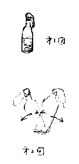
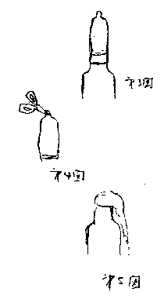

場所： 神田淡路町 「神田ふじ川」
平成８年を１月以上も残した平成８年１１月２８日。
早くも忘年会。
こんなに早く忘年会をするのは、当然のことながら泡梃子舞（あわてこまい）の集団である高高神田会である。
こうして第４回高高神田会は、神田淡路町「神田ふじ川」で開催された。
前回の会は伊達くんを講師にした「インターネット」を話題にした。
その会合の記録は、会の直後に書いたのだが、現在、その肝心のフロッピーが行方不明で見つからない。
その為に、記録としては欠如したままだーそれにしても、あのフロッピーはどこに行ったのかなぁ。
ともかく、今回のフロッピーは、キチンと残さなくっちゃ。
６時１８分。定刻には既に２０名近くの者が集まっている。
皆んな、よほど暇なんかいなぁ。
１１月に忘年会をやろうなんてのは、よほど慌て古米（あわてこまい）の集まりだと思っていたが、そうではなくて、単純にみんな暇なのだ。勿論、私も暇でしょうがないから忘年会に一番に参加しているのだが。
ともかく、６時２０分に例によって久保先輩の発声で乾杯して宴会を開始。
今日のテーマは、口の話し。
まず宮本先輩（２７年卒）の「噛む」話である。
宮本先輩は内神田で歯医者さんをやっている。
先輩の話しは、「よく噛む」ことが健康の要諦である、ということであった。
よく噛むの「よく」とは、どの位噛めば「よく」噛んだになるのか。
先輩の話では３０回位だとのこと。
では、この３０回噛むにはどの位時間がかかるか。
先輩の話しでは１秒に３回噛めるから３０回噛むのに１０秒位しか懸からないということであった。
ところが、その説明に疑い深い後輩がいて、そんなに短時間では無理ではないかと失礼なことを大声で言う奴がいた。
我々の会は、後輩も先輩の話を聞くのに酒を呑みながらではあるし、話しの途中でも話しの腰を折ったりする。話を折るだけでなく、曲げたり、捩じったりもする。まあ目茶苦茶なのだ。
と、言っているが、その疑い深い後輩というのは実は私だったのです。
そうすると、私だけが目茶苦茶なんやろか？
まあ、それはともかく、捩じられた話しは、結局、初参加の三好君（５６年卒）が３０回噛むことにして時間を計ることになった。計測は、三好君の前に座った堀本君（４７年卒）が行う。
この会に参加した者は、この結果を既に知っているが、今回欠席した人は、３０回噛むのにどの位かかると思う？
堀本君が計測結果を発表した。
何と１１秒だった。
やはり先輩の言う通りである。
疑い深い後輩も、実験結果で納得した。
でも今酔いも覚めて私は再度考えている。
若い三好君だから１１秒だったが、噛む速度は、当然のことながら年齢に対応するはずである。
１１秒というと１００メートル走るのと同じ速度だ。
そうすると、３０回噛む速度は、１００メートル走る速度と対応するのかも知れない。ならば、私の場合は１００メートル走るのに１２秒位はかかるから、噛むのも、その位はかかることになる。
そうや。噛む速度を競争するというのも面白そうや。その内に「３０回噛み競争」なんてのが出来るのでないか。
世界３０回噛み選手権大会が行われたりして。
そうや、近いうちにオリンピックの正式種目になるのでないか。そうすると、世界記録は８秒台などと話題になったりして。３０回なんてケチなことを言わずに、１万回噛み競争なんてのもでてくるし、４２，１９５回噛むというマラソン噛み競争なんてのも出てくるわな。３０回かむのに１１秒だから、４万回噛むのはどの位かかるんやろか。
こうなると、何を噛むかも話題になるよね。そうすると日本のスルメなんてのは、競技用スルメ、練習用スルメなんてので、スルメ業者が儲かるわな。
こんなことを世界の歯医者さんが国際運動でやれば良いのではないか。
「カムカムエブリボディ」運動なんて名前でやればオモロイのでないか。
そうだ、こんなアホなことを言ってる場合ではないのだ。
ところで、噛むことがどうして健康に良いのか。
先輩は説く。
噛むことによって、顎の動きが脳を刺激するし、精神も安定する。
脳を刺激するからボケ防止にもなる。
そこで、入江君（４２年卒）が、その刺激される左右の脳は、噛み方によって違うかどうかと質問した。
先輩の答えは、違わないとのこと。
私は、入江説と同じく、左で噛めば右脳を刺激するのでないかと思う。
なんでったって、その方が面白しろそうだもの。
と言っても、ここで私が余りコダワルのは無意味なのだ。
何てたって、私は日頃からモノを噛まない。だから私の左右の脳はいずれもボケてしまっている。
右で噛むか左で噛むかは癖なのか、性格と関係あるのか、という質問もあったが、先輩は、「どっちかで噛んでいて、そっちの歯がいたくなると違う方で噛むようになる。それだけだ」と丁寧に説明してくれた。
これが私なら、
「勿論、性格とどちらで噛むかは密接な関係があるよ。右で噛む人は左の脳の刺激を好み、理屈の多い人間が多い。左で噛む人は右の脳が刺激されることを好むのでイイカゲンな人が多い」と、まさに左で噛む人のようなイイカゲンなことを言うに違いない。
これが久保先輩なら、更に、これに「太陽の黒点」が多い場合と少ない場合に分けて説明し、更に、噛むにはこれが一番良いよ、と予め用意した固い塩昆布を持ち出して即売会になるのでなかろうか。
宮本先輩は、噛むことだけでなく、歩くことがどうして健康に良いかの説明もしてくれた。
歩くことが健康に良いというのは、足の筋肉を刺激するということでなく、歩くことによって内蔵の運動になり、それが体に良いということだった。
成程、そういうことか。
何かすっかり健康的な感じになって、次のスピーチとなる。
今日の講演は、２年立て興行なのだ。
講師は宮本先輩と同じ２７年卒の工藤先輩の予定であったが、突然、会合があり欠席となった。その為に、代理講師として久保先輩がレクチャーをする。
題して「お口の話しーパートⅡ」
工藤先輩は、不二ラテックスの常務である。
不二ラテックスは、知る人ぞ知る。知らない人も知らずに使っている、コンドームメーカである。
工藤先輩は欠席の為に、キチンとレジメを用意し、更に、現物も用意してくれていた。その現物は、久保先輩の前に山積みされている。
久保先輩は、レジメを読みながら、まるで自分が研究した成果のように話す。
いつものことながら、見事な話芸である。
山積みされた商品を時々手にもって
「さあ、お立会い、とうでヤマシコ笠のうち、ご用とお急ぎでない方はゆっくりと見ておいで、手前ここに持ち出したるは、不二ラテックスの「ミチコロンドン」だよ。
この「ミチコロンドン」、こちらにもある、あちらにもあるという品とは品が違うよ。なったってミチコだよ、ロンドンなんだよ、ミチコロンドンなんだから。
さーて、お立会い、ミチコロンドンとサチコパリとではどこが違う。
ロンドンはウェストミンスター寺院の修道僧が愛用したのがミチコロンドン、
パリはシャンゼリゼのカフェで朝のモーニングカフェを楽しむネーチャンをパリジェンヌというのは皆様ご存じだよね。そのジェンヌちゃんが愛用したのがサチコパリだ。
サッチャンはね♪（と歌いだす）♪♪♪ホントはサチコって言うんだよ♪だけど♪ちっちゃいから、サイズはＳを使うんだよ♪♪♪恥ずかしいね、さっちゃん♪♪♪
なんて馬鹿な歌を歌っている場合ではない。
ミチコロンドンなのだ。ミチコロンドンだ、ロンドン、ロンドン、♪ロンドンロンドン♪♪なんて歌っている場合ではなかったよね。
ロンドンなのだ、ロンドン使ってドンドン子供を生もうというのは無理な話しだ。
そうだ、ここに持ち出したるはミチコロンドンなのだ。
このミチコロンドン、本来であれば東京のデパート、かの黒木屋さんに行けば黒木香が売り場に立って何とこの１箱で、５０００円で買わなきゃ手に入らないのだ。
が、だが、しかしだ、今日のお客さんは実に運がイイよ。
実は、このミチコロンドン、私が手に入れたには深い深い訳があるのだ。まあお客さん少し聞いてやって下さい。
実は、私の友人にこのミチコロンドンを製造している工場に勤務していた者がいたのだが、それがこの間の神戸の震災で工場が一時閉鎖、急に給料が払えないということになった。そこで給料の代わりに現物支給で貰ってきたのが、このミチコロンドンなのだ。
だから今日は、デパートと同じ値段とは言わないよ。私の友人の家族で３歳の女の子がひもじい思いで待っているので、その子に今日のおかずを買えれば十分なのだ。おかずにはビフテキなんて言わないよ。小さな秋刀魚が一匹あれば、それで十分だ。
ということだから、特に、今日のお客さんには特別価格で提供しよう。ただし、数に限りがあるよ、誠に申し訳ないが一人２ケースにしておくれ、早いもの勝ちだ、さあ もってけ、泥棒！」
なんてことは、幾ら久保先輩でも言うはずがないか。
久保先輩の話しは、レジメに沿ってレクチャーしてくれる（その内容は工藤先輩のレジメを末尾に添付するので、それをご覧戴きたい。これは中々面白い話しがイッパイ載っているから、是非これを読んでお勉強をされたい。・・・・・でも、多くの会員が手遅れなんだろうなぁ。
ところで、今夜の会場はテーブルが二つのグループに分かれるように配置されていた。一つの塊は２０人座れたので、定刻に着いた者は、ひとかたまりに座ったが、遅れた者は別の寂しい島に座った。
遅れてきた為のペナルティという考えもあるが、キチンと仕事をしている少数派のエリート用特別席だと考えて良い。
でも、２０人のグループに比較して、数人のテーブルは、寂しい。
大西先生（３３年卒）や森川君（４１年卒）は寂しい島の住民になってしまった。
この寂しい島を見た池田さん（４７年卒）は気の毒がって、島に出張慰問にでかけた。偉い。やさしい。戦争中に南の島に慰問に行った淡谷のり子みたいだ（例えが余りヨクないかなぁ）。
この後、暫く歓談する。
歓談していたら、渡辺先輩（３１年卒）が「おい岡崎よぉ、初参加の者がおるんやから、挨拶させぇーよ」と流暢な讃岐弁で野多摩枠（のたまわく）のだ。
渡辺先輩は、私の長兄の同級生だから先輩だし、我々の年度（３７年）の二次会には渡辺先輩の店「アイビー」でタダのような値段でいつも呑ませて貰っている。それに来年の３７年卒の新年会には二次会でまた世話になるし。
だから、先輩からそう言われれば、私は「はい」と言うしかないのだ。
三好君。５６年卒。ソニー生命。
一番若い出席者。 どうして、最近の若い人は挨拶がうまいのだろう。
挨拶のうまさに感心したので、何を話したのか、忘れてしもうた。
頼則さん（３４年卒）。
元放送部。その高高放送部時代の青春の記録を今年の同窓会誌に発表し、その好評に気を良くして、その続編を構想中とのことだった。
そこで高高時代に瀬戸内海の無人島探検に行った話しをされる。
その島は、亀島とかいう島だそうだが、その島が長尾（か塩江かの内陸部の地名）の沖と言った途端に、内陸部に沖はないと言う声があがり、それはどこや、ちやうんとちやうか、という声が上がって大紛糾。
各々が自分が知ってる地名を大声で上げはじめ、坂出や丸亀や白鳥や三本松やと、讃岐の地名大辞典の雰囲気になった。
結局、紛糾した中でスピーカーが無人島の所在地が「志度の沖」案を採択し、訂正した。その為に皆納得して、論争に終止符を打たれた。
こんな地名のミスで、出席者全員が大声を上げて紛糾するところが、まあ同じ故郷を持つ者の集まりのバカバカしさであり楽しさでもある。
ベビーさん（２７年卒）。塚原先輩である。
久保先輩の話しでは、塚原先輩は若い頃からベビーフエイスで女性に持てたそうである。
池上通信機を退職後、現在は競馬の写真判定機のメーカ（プラスミック）で仕事をしている。
と言った途端に、先週のレースの着順を何とかして欲しかったなんて言う者もいた。
先輩は、来週にはアメリカの大学で競馬のセミナーに参加するそうである。アメリカの大学（イリノイ大学だったか？）では競馬学部があるそうで、その大学に短期留学なのだ。面白そうだ。
皆が、面白そうだ、ということになり、次回の高高神田会の講師に決まった。
このように簡単に講師が決まってしまうところが我々の会の良さである。
江野窪先輩（３１年卒）。
奥さんが私と喜岡の同級生である。前述した通り、私の長兄と渡辺先輩が同級生で、江野窪先輩も同級生だ。
私の次兄とは大西先生と同級生だし、渡辺先輩の妹さんは今日は欠席しているが、前田さんと同級生だし。と言うことをやっていればキリがない。
ともかく最初は知らない人が、話しをしているうちに誰かの知り合いであることが分かってくる。都会で住んで忘れてしまっている「我々は意外と狭い世界に生きている」という真理を思い出す貴重な経験ができるのが、我が会の存在意義の一つでもある。
松原圭介君、伊川徹君、４８年卒コンビだ。
来年の東京玉翠会の担当幹事だ。ともに景品を担当するそうだ。
まあ、ミチコロンドンが沢山入手できることが分かって一安心であろう。
でも、どうやって配分するか悩むだろうなあ。晩翠会の人に渡ったりすると偉いこっちゃになるやろからなぁ。
突然、久保先輩がビールを注文をした。

新しいビールが来たら、呑むのだと思ったら、飲みもしないで、やおらビール瓶に前に残っていたコンドームを取り出して被せた（第１図参照）。次に、ビール瓶を揺らす（第２図参照）。
このあたりで、一体、久保先輩は何をし始めたのか、と会場の注目が集まる。
この辺りは久保先輩の面目躍如だ。
でも、今回はさあてお立会いなんては言わない。
何も言わずに、一新に行動する。
沈黙が多弁よりも注目を集めるのだ。
この見事さ。

ところで、ゆらされたビール瓶の内部の空気（？）は外に出ようとするが、コンドームが被せられているのででれない。そうすると第３図のようになる。
見事に成功。
会場から拍手が沸いてくる。
長らく見たこともない元気の良さだ。
うらやましそうなため息が会場から漏れた。
久保先輩のパフォーマンスは、これで終わらない。
持ち出した鋏でコンドームの先をちょっと切る（第４図参照）。
そうすると、ビールの白い泡が先端から出て、膨らんでいたものが萎んでしまう（第５図）。
みごと完結だ。
でも、何と言う隠し芸だろう。
これは工藤先輩の持ち芸なのだそうだ。
工藤先輩の直弟子である久保先輩としては、折角のレクチャーだから、芸の披露もしたということらしい。
面白いなー。 コンドームをまともに使わなくなると、いろんなことに使う工夫が沸いてくるもんだなあ。
私もそろそろこういう芸を工夫しなくっちゃ。
そう言えば、神戸の震災でコンドームが役立ったという話しが紹介された。
多分、この話しの紹介は吉田先輩（２７年卒）だったと思う。
水を運ぶのに、コンドームは大変便利だと言う。なんたって、水をいれる前は全然かさばらないので、持参するのが楽である。バケツを運ぶ必要がない。
コンドームで水が少しは入るの？ なんて言ってのは素人である。
工藤先輩のレジメによれば、一つのコンドームに２０升も入るというから、一升瓶２０本分の水が楽に入るのだ。
凄いなー。
コンドームというのは一升瓶２０本分の物体を入れても大丈夫なのか。そんなデッカイ物を持っていると大変だろうなぁ。
コカコーラにも劣等感を感じている者としては、ついつい一升瓶とコンドームの相関関係を考えたくなるが、これまた余計なことだ。本論に戻ろう。
ところで、吉田先輩の話しでは、コンドームで水を運ぶのは、大変だそうだ。
水は幾らでも入るが、それを持って運ぶのは楽でない、ということである。そう言われれば、そうだろうなあ。
ところで、今回の会合の帰りに私もコンドームを貰って帰ることにした。
勿論、関東大震災に備えてである。
今や、私の机の引き出しには、いつ関東大震災が起こっても良いような体制となっている。
池田さんが前日の朝日新聞をもってきていた。見ると土居君（４７年卒）の記事がある
。インターネットを選挙に利用できるようにすべきであるという論文である。凄いなあ。天下の朝日新聞に、写真入りで載っている（その新聞記事を縮小して、この記録に綴じることにする）。
土居君の話しでは、この投稿で３万円をせしめたそうである。
凄いなぁー。偉いなぁー。
天下の朝日新聞を騙して３万円もせしめるなんて。
この新聞をみんな見せる為に、その新聞のコピーをとってくることにして、近所のＡＭＰＭに行ったら、このコンビニにはコピー機がないと言う。
何てことだ。しようがないので、私の事務所に戻ってコピーすることにする。
近所で宴会をやるのもヨシアシだなぁ。
事務所で人数分のコピーをして、ついでに仕事の電話をしていたら結構時間が経過した。宴会に戻ったら、ボチボチ解散の時間になっていた。
今回記録を纏めていて、今回は余りみんなと話をしなかったな、と思っていたら、この途中で結構の時間抜けていたのだ。
だから、今回の初参加の人と余り話をしておらず、また私の近所の森川さん（４５年卒）とかカラオケで伊達君の歌を聞いた仲間である辻さん（４７年卒）とかを皆に引き回すことができなず、また初参加の人とも親しく話をすることができなかった。
みんなゴメン。
今回の宴会の会場の隅に、半切りの紙を置いて、伊達君へのメッセッジを募集した。
墨と筆を用意していたら、２７年卒から３４年卒までは筆で書いたが、若い人たちはボールペンであったが、先輩は毛筆で達筆で書いてくれた。
毛筆を読むと「平凡一番（宮本先輩）」、「天下泰平こともなし（渡辺先輩）」「命短恋乙男祈幸運（頼則先輩）」「行不由逢（林先輩）」「人生如白駒隙過（久保先輩）」と先輩の言葉は中華文明の教養が溢れている。
これらの先輩の毛筆に比較し、後輩諸氏は口語体でボールペンである。
「元気ですか、早く戻ってきて下さい（土居）」「ＨＩＶ完治薬を土産に故郷に錦を飾って下さい（入江）」「先輩の堀本です。Ｅｍａｉｌ送って下さい」「伊達君、相変わらず娘は美人で独身です（中西）」「プレゼントの不二ラテックスは役立っていますか（池田）」
ところが、これを肝心の伊達君に送るのを私は忘れていて、年賀状も終わる頃に、この記録と一緒に慌てて送る羽目になった。
そういうことなので、伊達君、元気で頑張れよ。
付記
あっ、そうだ、忘れてた。
忘年会の後で、私は大西先生に御馳走になったのだ。
会が終わった後で、頼則さん、土居さん、堀本さん、池田さん、辻さん、中西さんに三好さんと一緒に、隣の讃岐うどん屋に飛び込み、もう店は終わったというのに、無理に、残ったうどん４人前とむすび９ケを注文し、一杯１００円のビールも注文して、大いに二次会として盛り上がったのだ。
大西先生、御馳走さまでした。誌面を借りてお礼申し上げます。
ごっとーさんでした。
これで本当にお終い。